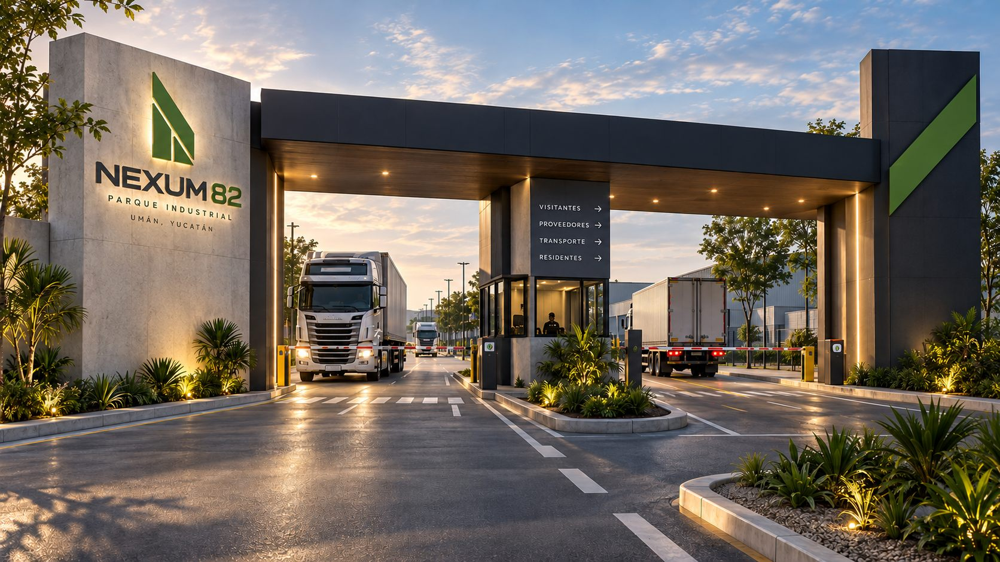

Distrito industrial · Umán, Yucatán
Imagen conceptual incluida en el brochure oficial.
El espacio para llevar tu operación más lejos.
Nexum82 reúne industria, logística, ferrocarril, comercio y servicios en un distrito planeado para empresas que buscan crecer y conectar sus operaciones desde Yucatán.
Una visión de crecimiento
Un distrito diseñado alrededor de cómo se mueve tu negocio.
Una operación necesita más que superficie: necesita espacio para producir, almacenar, recibir mercancía y crecer. Nexum82 plantea un entorno industrial organizado para reunir esas actividades y facilitar la planeación de cada proyecto.
Su propuesta combina lotes de diferentes dimensiones con zonas especializadas, en una ubicación estratégica dentro del corredor de Umán. Así, cada empresa puede evaluar el espacio que mejor se adapta a su operación actual y a sus siguientes etapas.
El masterplan y las imágenes muestran la propuesta conceptual del desarrollo; el proyecto, su infraestructura y etapas están sujetos a confirmación.

Planeación por zonas
Cinco áreas. Un mismo ecosistema productivo.
El brochure oficial describe zonas especializadas para acercar actividades complementarias y crear un entorno preparado para empresas, operadores y proveedores.
Industria
Espacios para manufactura, producción y proyectos industriales.
Logística
Área vinculada con almacenaje, distribución y movimiento de mercancías.
Ferrocarril
Componente ferroviario considerado en la propuesta de conectividad del distrito.
Comercio
Actividades comerciales que complementan la dinámica industrial.
Servicios
Servicios de apoyo para empresas, colaboradores y operación cotidiana.
Espacios para cada etapa
Elige la superficie que acompaña tu plan.
Tres escalas de lote permiten explorar alternativas según el tamaño de la operación, sus requerimientos y su horizonte de crecimiento.
Microlotes
Desde 1,250 m²
Una superficie compacta para iniciar un proyecto, ampliar presencia o invertir con un requerimiento de espacio más accesible.
Usos sugeridosShowroom · taller · bodega · distribución local
Lotes medianos
Desde 2,500 m²
Más capacidad para empresas que están expandiendo su actividad y necesitan combinar operación, almacenamiento y maniobra.
Usos sugeridosAlmacén · taller especializado · producción · distribución regional
Macrolotes
Desde 10,000 m²
Alternativa para proyectos con necesidades amplias de capacidad, circulación interna y espacio para futuras etapas.
Usos sugeridosPlanta · centro logístico · nave industrial · patio de maniobras
Las superficies y usos se presentan como referencias del brochure; disponibilidad, medidas, compatibilidad de uso y condiciones deben validarse con el equipo comercial.

Conexión regional
Umán: cerca del pulso industrial de Yucatán.
Nexum82 se ubica en Umán, dentro del entorno metropolitano de Mérida. El folleto presenta su emplazamiento en relación con carreteras regionales, la zona metropolitana y el corredor ferroviario de carga.
UbicaciónUmán, Yucatán, al sur de Mérida.
CarreterasEl mapa del brochure señala conexión con la carretera federal 281 y vías de la región.
FerrocarrilEl folleto describe el corredor de carga Poxilá/Umán–Puerto Progreso como parte de la perspectiva logística.
Mapa ilustrativo. La infraestructura ferroviaria, rutas, obras, accesos y tiempos de traslado pueden cambiar; confirma su situación vigente antes de tomar una decisión.
Planea con información clara
Conoce etapas, disponibilidad y condiciones.
El brochure menciona 2031 en relación con la entrega. Solicita al equipo comercial la etapa aplicable y el calendario actualizado del lote que te interesa.
2031Fecha referida en brochure
Proyecto e inventario
Conoce los espacios y revisa las opciones vigentes.
Imágenes y videos de referencia para ayudarte a conocer el desarrollo. Pide al equipo comercial la información actualizada antes de apartar.
Inventario y opciones
Inventario industrial
Revisa el plan maestro y solicita las superficies, etapas y condiciones vigentes para tu operación.
El plan maestro es ilustrativo y no muestra por sí mismo la disponibilidad de cada espacio. Confirma área, uso permitido, etapa y condiciones con el equipo comercial.
Solicitar disponibilidadSiguiente paso
Solicitar informes Cuéntanos qué necesita tu operación.
Solicita superficies, disponibilidad, precios y detalles del plan maestro. El equipo de Tierra Yuc. puede ayudarte a identificar qué alternativa vale la pena explorar.